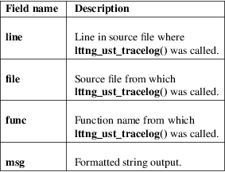

lttng_ust_tracelog, lttng_ust_vtracelog − LTTng−UST printf(3)−like interface with a log level
#include <lttng/tracelog.h>
#define
lttng_ust_tracelog(level, fmt, ...)
#define lttng_ust_vtracelog(level, fmt,
ap)
Link with:
• -llttng-ust
• If you define _LGPL_SOURCE before including <lttng/tracelog.h> (directly or indirectly): -llttng-ust-common
The LTTng−UST lttng_ust_tracelog() and lttng_ust_vtracelog() API allows you to trace your application with the help of simple printf(3)−like and vprintf(3)−like macros, with an additional parameter for the desired log level.
The fmt argument is passed directly as the fmt parameter of vasprintf(3), as well as:
For lttng_ust_tracelog()
The optional parameters following fmt.
For lttng_ust_vtracelog()
The ap parameter as the ap parameter of vasprintf(3) (va_list type).
The purpose of lttng_ust_tracelog() and lttng_ust_vtracelog() is to ease the migration from logging to tracing.
The available values for the level parameter are:
LTTNG_UST_TRACEPOINT_LOGLEVEL_EMERG
System is unusable.
LTTNG_UST_TRACEPOINT_LOGLEVEL_ALERT
Action must be taken immediately.
LTTNG_UST_TRACEPOINT_LOGLEVEL_CRIT
Critical conditions.
LTTNG_UST_TRACEPOINT_LOGLEVEL_ERR
Error conditions.
LTTNG_UST_TRACEPOINT_LOGLEVEL_WARNING
Warning conditions.
LTTNG_UST_TRACEPOINT_LOGLEVEL_NOTICE
Normal, but significant, condition.
LTTNG_UST_TRACEPOINT_LOGLEVEL_INFO
Informational message.
LTTNG_UST_TRACEPOINT_LOGLEVEL_DEBUG_SYSTEM
Debug information with system−level scope (set of programs).
LTTNG_UST_TRACEPOINT_LOGLEVEL_DEBUG_PROGRAM
Debug information with program−level scope (set of processes).
LTTNG_UST_TRACEPOINT_LOGLEVEL_DEBUG_PROCESS
Debug information with process−level scope (set of modules).
LTTNG_UST_TRACEPOINT_LOGLEVEL_DEBUG_MODULE
Debug information with module (executable/library) scope (set of units).
LTTNG_UST_TRACEPOINT_LOGLEVEL_DEBUG_UNIT
Debug information with compilation unit scope (set of functions).
LTTNG_UST_TRACEPOINT_LOGLEVEL_DEBUG_FUNCTION
Debug information with function−level scope.
LTTNG_UST_TRACEPOINT_LOGLEVEL_DEBUG_LINE
Debug information with line−level scope (default log level).
LTTNG_UST_TRACEPOINT_LOGLEVEL_DEBUG
Debug−level message.
To use lttng_ust_tracelog() or lttng_ust_vtracelog(), include <lttng/tracelog.h> where you need it, and link your application with liblttng-ust and liblttng-ust-common. See the EXAMPLE section below for a complete usage example.
Once your application is instrumented with lttng_ust_tracelog() and/or lttng_ust_vtracelog() calls and ready to run, use lttng-enable-event(1) to enable the lttng_ust_tracelog:* event. You can isolate specific log levels with the --loglevel and --loglevel-only options of this command.
The lttng_ust_tracelog() and lttng_ust_vtracelog() events contain the following fields:

If you do not need to attach a specific log level to a lttng_ust_tracelog()/lttng_ust_vtracelog() call, use lttng_ust_tracef(3) instead.
See also the LIMITATIONS section below for important limitations to consider when using lttng_ust_tracelog() or lttng_ust_vtracelog().
Here’s a usage example of lttng_ust_tracelog():
#include
<stdlib.h>
#include <lttng/tracelog.h>
int main(int
argc, char *argv[])
{
int i;
if (argc <
2) {
lttng_ust_tracelog(LTTNG_UST_TRACEPOINT_LOGLEVEL_CRIT,
"Not enough arguments: %d", argc);
return EXIT_FAILURE;
}
lttng_ust_tracelog(LTTNG_UST_TRACEPOINT_LOGLEVEL_INFO,
"Starting app with %d arguments", argc);
for (i = 0; i
< argc; i++) {
lttng_ust_tracelog(LTTNG_UST_TRACEPOINT_LOGLEVEL_DEBUG,
"Argument %d: %s", i, argv[i]);
}
lttng_ust_tracelog(LTTNG_UST_TRACEPOINT_LOGLEVEL_INFO,
"Exiting app");
return EXIT_SUCCESS;
}
This C source file, saved as app.c, can be compiled into a program like this:
$ cc −o app app.c −llttng−ust −llttng−ust−common
You can create an LTTng tracing session, enable all the lttng_ust_tracelog() events, and start the created tracing session like this:
$ lttng create
my−session
$ lttng enable−event −−userspace
'lttng_ust_tracelog:*'
$ lttng start
Or you can enable lttng_ust_tracelog() events matching a log level at least as severe as a given log level:
$ lttng
enable−event −−userspace
'lttng_ust_tracelog:*' \
−−loglevel=INFO
Next, start the program to be traced:
$ ./app a few arguments passed to this application
Finally, stop the tracing session, and inspect the recorded events:
$ lttng stop
$ lttng view
The lttng_ust_tracelog() and lttng_ust_vtracelog() utility macros were developed to make user space tracing super simple, albeit with notable disadvantages compared to custom, full−fledged tracepoint providers:
• All generated events have the same provider/event names.
• There’s no static type checking.
• The only event field with user data you actually get, named msg, is a string potentially containing the values you passed to the macro using your own format. This also means that you cannot use filtering using a custom expression at run time because there are no isolated fields.
• Since lttng_ust_tracelog() and lttng_ust_vtracelog() use C standard library’s vasprintf(3) function in the background to format the strings at run time, their expected performance is lower than using custom tracepoint providers with typed fields, which do not require a conversion to a string.
• Generally, a string containing the textual representation of the user data fields is not as compact as binary fields in the resulting trace.
Thus, lttng_ust_tracelog()/lttng_ust_vtracelog() are useful for quick prototyping and debugging, but should not be considered for any permanent/serious application instrumentation.
lttng_ust_vtracelog() does not have a STAP_PROBEV() call, because STAP_PROBEV() does not support va_list. If you need it, you should emit this call yourself.
See lttng-ust(3) to learn more about custom tracepoint providers.
If you encounter any issue or usability problem, please report it on the LTTng bug tracker <https://bugs.lttng.org/projects/lttng-ust>.
• LTTng project website <http://lttng.org>
• LTTng documentation <http://lttng.org/docs>
• Git repositories <http://git.lttng.org>
• GitHub organization <http://github.com/lttng>
• Continuous integration <http://ci.lttng.org/>
• Mailing list <http://lists.lttng.org> for support and development: lttng-dev@lists.lttng.org
• IRC channel <irc://irc.oftc.net/lttng>: #lttng on irc.oftc.net
This macro is part of the LTTng−UST project.
This macro is distributed under the GNU Lesser General Public License, version 2.1 <http://www.gnu.org/licenses/old-licenses/lgpl-2.1.en.html>. See the for more details.
Thanks to Ericsson for funding this work, providing real−life use cases, and testing.
Special thanks to Michel Dagenais and the DORSAL laboratory <http://www.dorsal.polymtl.ca/> at École Polytechnique de Montréal for the LTTng journey.
LTTng−UST was originally written by Mathieu Desnoyers, with additional contributions from various other people. It is currently maintained by Mathieu Desnoyers <mailto:mathieu.desnoyers@efficios.com>.
lttng_ust_tracef(3), lttng_ust_vtracef(3), lttng-ust(3), lttng(1), printf(3)